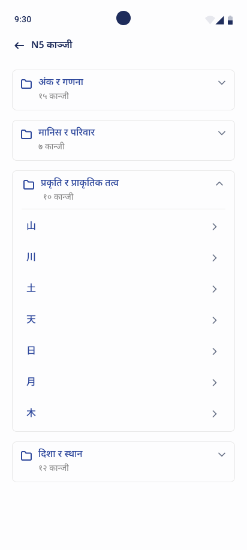
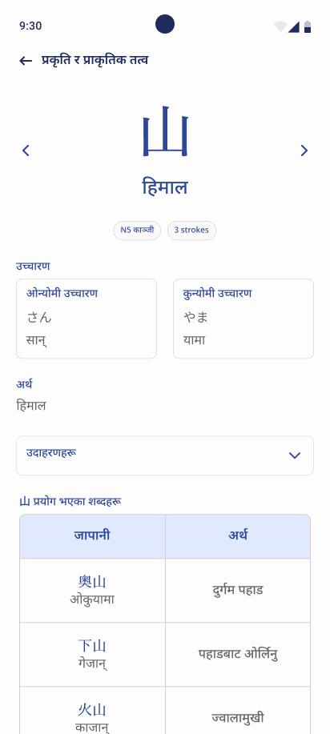
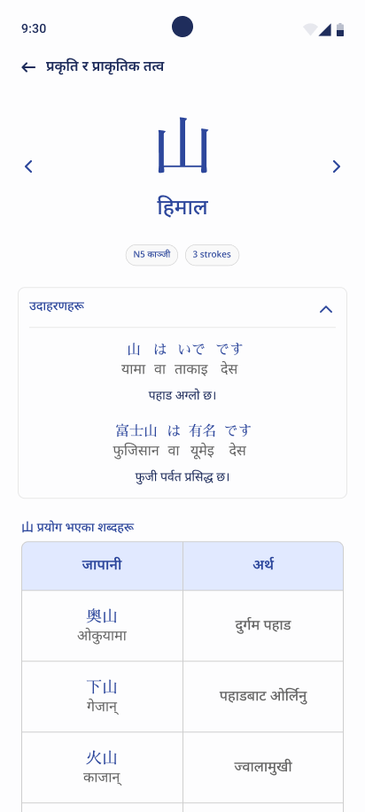

Organizing Kanji into levels
I divided Kanji into separate levels, creating a more structured way for learners to navigate the content and find the characters they wanted to study.
Product design
A mobile Japanese learning platform designed for Nepali learners. I worked on the Kanji learning experience, creating a structured way for students to explore characters, understand their meanings, and learn how they are used.
The project
Nihongo Nepal is a mobile learning platform that helps Nepali students learn Japanese.
As part of a team project, I focused on the Kanji section. My goal was to make learning Kanji more approachable by organizing characters into levels and presenting essential information in a clear, consistent format.
More than memorizing characters
For beginners, learning Kanji means understanding its pronunciation, meaning, and usage in different words. Without a clear structure, this information can feel overwhelming.
How might we simplify the Kanji learning experience and make it easier for students to understand and revise characters?
Structuring the learning experience
I divided Kanji into separate levels, creating a more structured way for learners to navigate the content and find the characters they wanted to study.
I designed a repeatable screen layout for individual characters, allowing students to follow the same learning pattern throughout the experience.
Instead of presenting characters in isolation, I included examples and related vocabulary to help learners understand how each Kanji appears in the Japanese language.
The Kanji learning experience



Replace these illustrative placeholders with the corresponding Kanji levels, individual character, and examples screens when the final app screenshots are available.
Principles behind the interface
The Kanji character is the primary focus, while supporting information is organized into distinct sections.
Each character follows the same structure, making the experience predictable and easier to navigate.
Examples and related vocabulary help connect character recognition with broader language learning.
A structured learning experience
The resulting design established a structured approach to learning Kanji within Nihongo Nepal.
These were the intended design outcomes; formal usability metrics and learning results were not measured.
Learnings & next steps
This project helped me understand how information architecture and visual hierarchy can support a learning experience.
I learned that educational interfaces should do more than display information — they should organize it in a way that makes the next step clear.
Given another opportunity, I would test the experience with beginner learners and explore recall quizzes and spaced revision to support long-term retention.
Designing for learning means making complex information easier to understand, one step at a time.
Have something worth designing?